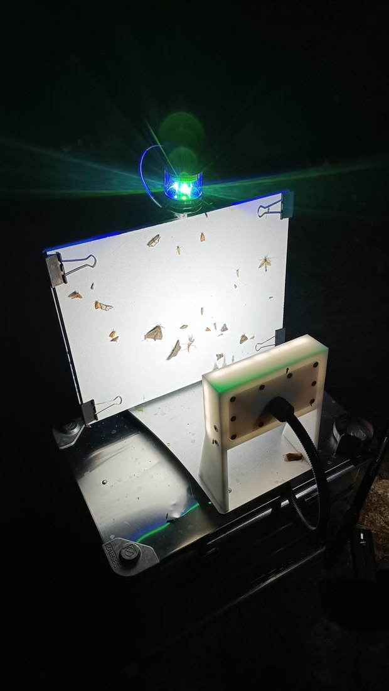
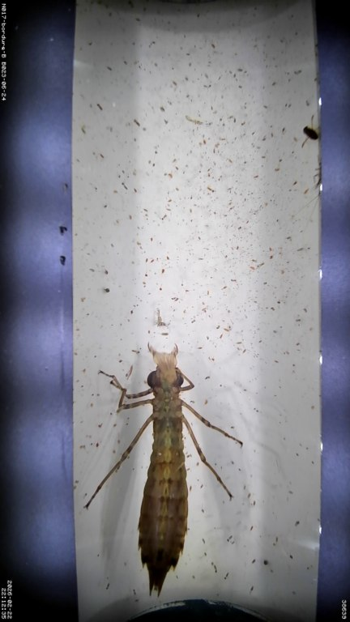
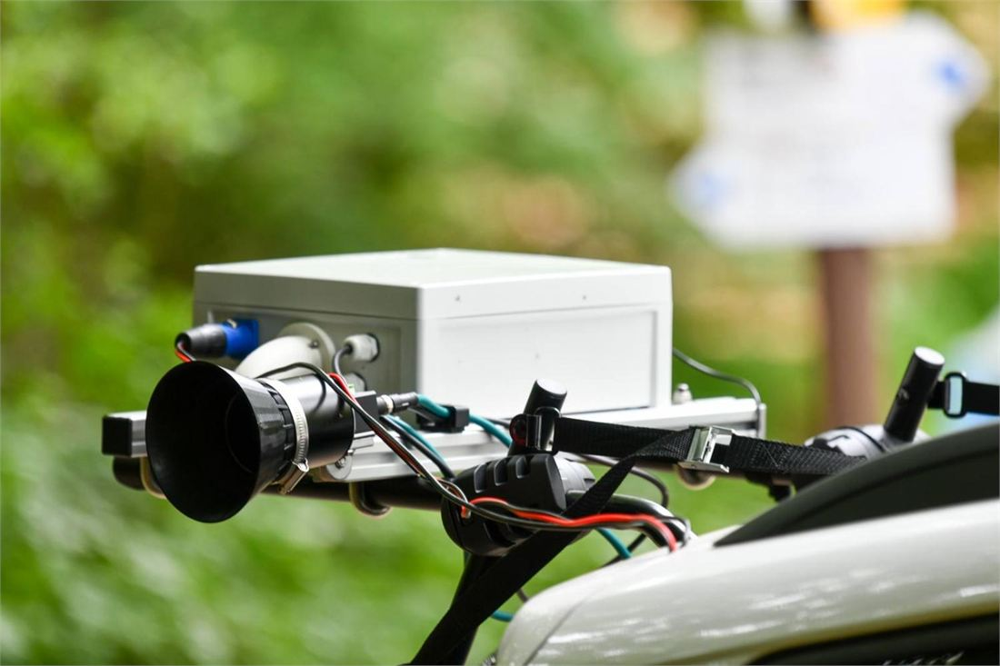
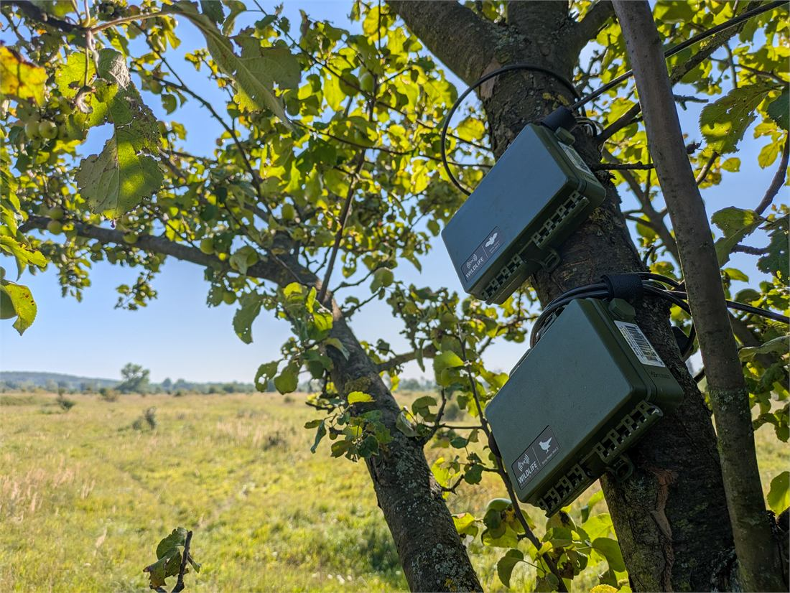

MANTIS
A Hub for Monitoring with Automated and Novel Technologies Based on Image and Sound
Why a hub for sensor-based biodiversity monitoring, and why now
Nine minutes at a comfortable pace, with a minute in hand. If you are held to seven, cut “Three bottlenecks” to its first line and give the packages slide its three column headers only.
The sensors are already in the ground, yet the system is incomplete
Deployed, at scale, today
- ABMS pilot (2.6.5) – AMI traps and acoustic recorders in three habitat types across 11 countries
- IAS pilot (2.6.2) – an AMI trap and a CamAlien unit in 10 countries
- BiodivPond pilot (2.6.8) – acoustic recorders in ten countries, showing standardised pond monitoring at continental scale
- MAMBO and related projects – AI-based insect camera traps in over 30 countries
- TABMON – autonomous acoustic sensors across four countries, showing standardised passive acoustic monitoring at continental scale
Operated as independent efforts
- Ad hoc methods for annotation, verification and AI model selection, project by project
- Interoperability bottlenecks between devices, national databases and European infrastructures
- Few cross-country verified reference datasets, and those that exist are scattered and often poorly curated
- Hardware maintained country by country, needing more transnational support than expected
Partners have free access to their own data – but not the tools or capacity to use it for policy-relevant insight.
75 seconds. The point of this slide is that MANTIS asks nobody to believe in an unproven technology. The deployments exist, the devices work, and Biodiversa+ has already paid for a good share of them. What does not exist is anything joining them up.
Three technologies


AMI, NewtCam
- AMI: nocturnal insects photographed at a lit sheet
- NewtCam: pond invertebrates and amphibians, underwater
ABMS (2.6.5), IAS (2.6.2), MAMBO

CamAlien
- High-speed, car-mounted camera with GPS
- Maps invasive alien plants along roads
IAS pilot (2.6.2)

Acoustics
- Birds (audible) and bats (ultrasound)
- HydroMoth: amphibians, underwater
ABMS (2.6.5), BiodivPond (2.6.8), TABMON
45 seconds. Put faces to the devices before the problems. Insect cameras: AMI on land, already deployed across the pilots; NewtCam the new underwater variant MANTIS operationalises (A1.5), not yet deployed. CamAlien: invasive plants mapped from a moving car. Acoustics: birds and bats on land, amphibians underwater with HydroMoths (A1.6). Every one of them produces images or sound faster than anyone can check by hand – which is the next slide.
Three bottlenecks – and not one of them is national
- Verification cannot keep up. The volume of image and sound data has grown faster than the community’s capacity to verify it, calibrate the AI models processing it, and make the outputs comparable across countries and taxa.
- AI accuracy is unknown outside its training context. Moth classifiers trained on Danish and UK expert-verified images performed poorly in Slovakia, Croatia, Bulgaria and Israel. TABMON names the same annotation bottleneck as its principal constraint on scaling.
- Sensors still need field visits. A substantial share of deployed acoustic recorders require manual retrieval rather than remote transfer, limiting temporal coverage and cost-efficiency.
Left unaddressed, these problems risk automated monitoring becoming a source of fragmented, incomparable, or even unprocessed national data – repeating, at greater cost and complexity, the exact coordination problem transnational monitoring should be designed to solve.
90 seconds, and this is the slide that has to land. Model calibration, sensor connectivity and annotation protocol design are not country-specific technical problems, so they should not be solved redundantly across up to 27 Member States. Read the quote out – it is the proposal’s own sentence.
The aim: connective tissue
- Connect data acquisition – align protocols, deployments and annotations, and extend spatial and taxonomic coverage with new sensor deployments. Package 1
- Connect the data – harmonise datasets and metadata into a seamless, quality-controlled flow from images and sounds to indicators, including transnational benchmarking of AI models. Package 2
- Connect the community – link the users of these technologies to one another, and to the skills and resources that sustain a transnational effort. Package 3
MANTIS positions itself as a progenitor for a Thematic Hub associated with an EBOCC. Core Activity 3 primary; Core Activities 2 and 4 secondary.
60 seconds. “Connective tissue” is the proposal’s own phrase and the one image worth repeating. MANTIS builds infrastructure for monitoring itself, not another technology or another taxon’s dataset – the feature Biodiversa+ asks of a Task 2.5.3 activity as opposed to a conventional research grant.
What the hub changes
At the end of this activity…
…national and regional automated monitoring efforts using image and sound technologies will function as a connected, transnational system rather than isolated national deployments.
Because MANTIS will have –
- aligned data acquisition protocols and coverage across partners;
- harmonised the resulting datasets and metadata into a quality-controlled flow from raw sensor output to indicators;
- built the community, skills and self-sustaining infrastructure needed to carry this connected effort beyond the funded period.
45 seconds. The structural change in one sentence, verbatim from the proposal. Pause after “rather than isolated national deployments” – the three clauses under it map one-to-one onto the three packages, and onto the next slide.
MANTIS is one quality-controlled chain from a sensor in the field to a policy indicator, and the three packages each own a different stretch of it.

75 seconds. Walk it left to right once, then stop on the numbered gates: deployment registration, expert verification, AI benchmarking, standards conformance. The gates are the activity. Almost everything either side of them already exists somewhere in Europe.
Five objectives, each with a number attached
| Objective | Target and indicator | Deadline |
|---|---|---|
| O1 Every deployment registered, in one place | 100% of active AMI, CamAlien and acoustic deployments across ≥8 partner countries, registered and machine-readable in a Camtrap DP-compliant master database | 30 Sep 2028 |
| O2 Sensor data reaches policy without bespoke analysis | ≥4 finalised indicators live on the MANTIS dashboard, each mapped to NRR Art. 10 / EU-PoMS, the Habitats Directive, the Birds Directive or IAS Regulation 1143/2014, and auto-updating from GBIF | 30 Sep 2028 |
| O3 Data to benchmark AI against | ≥5,000 expert-verified annotations published under FAIR principles, including ≥2,000 NewtCam annotations; ≥20% reviewed by experts from ≥2 countries | 31 Dec 2027 |
| O4 Partners can run this themselves | 25 summer-school participants from ≥12 countries; ≥20 distinct organisations attending ≥1 of the 8 online events | 30 Jun 2028 |
| O5 A pathway beyond Biodiversa+ | Roadmap endorsed by ≥2/3 of partners at BioMonWeek 2028, naming ≥2 concrete funding or hosting pathways | 30 Jun 2028 |
75 seconds. Do not read the table. Say: every objective carries a date and a threshold, so at the end of the activity you can tell whether it was met without holding a discussion about it. Point at O3 as the one everything else depends on, and at O5 as the one that decides whether this outlives the money.
How it gets done
Nineteen activities, three packages
Package 1 – Scheme improvement
Core Activity 2 · seven activities
- Unified deployment registration system A1.1
- Verified datasets for transnational quality control A1.2
- Scaling contributions toward verification A1.3
- Sensor upgrades in existing networks A1.4
- Underwater imaging of benthic invertebrates A1.5
- Underwater acoustic pilot in ponds A1.6
- Scaling spatial coverage of existing schemes A1.7
Package 2 – Data flows
Core Activity 3, primary · five activities
- Transnational benchmarking of AI, and pipeline refinement A2.1
- Gold-standard implementation of media, label and annotation standards A2.2
- Workflows for policy-relevant indicators A2.3
- Scaling contributions toward transnational indicators A2.4
- Exemplary data-flow architecture for AMI A2.5
Package 3 – Capacity building
Core Activity 4 · seven activities
- Platform for communication and signposting A3.1
- MANTIS summer school A3.2
- Roadmap for a technical hub A3.3
- Technical fora and curated user guidance A3.4
- Two workshops on verification A3.5
- Four device webinars A3.6
- Two workshops on AI processing A3.7
Nine deliverables and sixteen milestones, between 1 January 2027 and 30 September 2028.
75 seconds. Do not read nineteen activity titles. Give one sentence per column: Package 1 improves the schemes that feed the chain, Package 2 carries the data through it, Package 3 builds the capacity that keeps it running. Then name the three outputs a decision maker will actually look for – the registration system online (M1.3, Aug 27), four indicators live on the dashboard (M2.2, Jul 28), and the roadmap (D3.1, Sep 28). The next three slides take the packages one at a time, so this slide is the map: do not linger.
Package 1 – Scheme improvement
Task
What partners get
How partners contribute
A1.1 Deployment registration Hub-led
Your deployments on one joined-up map and dashboard
A1.2 Verified datasets Hub-led
Shared annotation systems/protocols for verified species records
A1.3 Scaling verification Partner-led
AI checked by your own experts, for your own region
Expert annotation time
A1.4 Sensor upgrades Partner-led (hub-supported)
Devices that report remotely and run on solar, fewer field visits
Equipment, deployment and upkeep
A1.5 NewtCam in ponds Hub-led (partner-supported)
Guidelines for underwater imaging of pond invertebrates, cross-evaluation with eDNA
Equipment and maintenance of devices at two pond sites
A1.6 Underwater acoustics Hub-led (partner-supported)
Guidelines for underwater acoustic monitoring of amphibians, reference sound library
Equipment and maintenance of devices at two pond sites
A1.7 Spatial coverage Partner-led
New AMI and acoustic stations, linked to the European network
Equipment and maintenance of devices at a coverage-gap site
Partner-led tasks are where in-kind effort or EC top-up goes. Top-up doesn’t unlock further EC funding, but it puts the hub to work in your country.
60 seconds. Read the colours, not the rows: navy is what the hub delivers for everyone, turquoise is hub-led work partners can join, green is where partners lead. Package 1 is the package with the most green – verification, upgrades and new stations all happen in partners’ own countries. For A1.4 to A1.7 an in-kind contribution can mean providing or buying the equipment as well as running it.
Package 2 – Data flows
Task
What partners get
How partners contribute
A2.1 AI benchmarking Hub-led
Reliability scores for AI identifications, by taxon and region
A2.2 Data standards Hub-led
Worked examples for publishing image and sound data to GBIF
A2.3 Policy indicators Hub-led
Indicators from sensor data mapping to NRR, Habitats, Birds and IAS reporting
A2.4 Scaling indicators Partner-led
Indicators that reflect partners’ needs
Policy and taxonomic expertise for indicator design
A2.5 AMI data flow Hub-led
A near one-click pipeline from AMI images to indicators
Partner-led tasks are where in-kind effort or EC top-up goes. Top-up doesn’t unlock further EC funding, but it puts the hub to work in your country.
45 seconds. Package 2 is almost entirely hub-led: partners receive it. The one place to step in is A2.4 – the indicators get built either way, and partner expertise decides whether they answer your country’s reporting questions.
Package 3 – Capacity building
Task
What partners get
How partners contribute
A3.1 Platform Hub-led
One place to find tools, standards, indicator dashboards
A3.2 Summer school Hub-led
Hands-on training for early-career staff and students
A3.3 Hub roadmap Hub-led (partner-supported)
A plan to keep the hub running after 2028
Ideas on roles, governance, hosting and funding
A3.4 Technical fora Hub-led (partner-supported)
A moderated place to ask about AMI, acoustic and CamAlien systems
Moderation, guidance and lessons from your own experience
A3.5 Verification workshops Hub-led
Training to verify images and sounds from your deployments
A3.6 Device webinars Hub-led
Lessons from big projects running AMI, CamAlien and acoustic devices
A3.7 AI processing workshops Hub-led
Skills/resources to run open-source AI models on your own data
Partner-led tasks are where in-kind effort or EC top-up goes. Top-up doesn’t unlock further EC funding, but it puts the hub to work in your country.
45 seconds. Package 3 is what every partner gets regardless of what they put in: training, a platform and a place to ask questions. The two turquoise rows are where partners shape the hub’s future – the fora run on partners’ experience, and the roadmap decides what carries MANTIS past 2028.
Built to scale with the number of partners who join
- CORE – everything the two lead partners deliver regardless: registration system, verified datasets, AI benchmarking, standards, indicators, platform, summer school, roadmap. €314,630.80
- CORE + ENHANCED – adds the underwater acoustic pilot, the one-click AMI pipeline, technical fora, verification and AI-processing workshops, and the device webinars. €422,535.30
- SCALABLE – priced per participating partner: scaled contributions to verification and to indicators, sensor upgrades, and new deployments in coverage-gap countries. ≈€54,494.36 each – 4 person-months, 2 in-person attendances, €21,086.40 of equipment
Total requested: €796,850.18 – CORE + ENHANCED for the leads, plus six additional participating partners. At twelve participating partners the scalable line reaches €701,281.04.
60 seconds, and it serves two rooms at once. For Biodiversa+: the activity descopes cleanly rather than failing – fewer partners means proportionally fewer scaled deployments, not a thinner version of everything. For a partner weighing whether to join: the tail of the third bullet is the commitment – four person-months, two trips, and equipment that stays with you.
If asked: the SCALABLE tier is where the proposal’s own shading and its budget table disagree over A1.5 and A1.6, which is why this slide prices the tier by what it funds rather than by activity ID. See MISSING-INPUTS.md. The per-partner personnel figure is still marked TBC in section 11.1, so it is not quoted separately here.
Sustainable past 2028
Maintenance rests on three layers, none of which requires continued project funding.
- Permanent mandates own the outputs. NCA CZ maintains the verified reference datasets and annotation capacity under its statutory Habitats and Birds Directive reporting duties. Aarhus University underwrites storage and curation of media in its Environmental Research Data Archive until 2031. Records and datasets are published to GBIF and Zenodo, so the data survives independently of any single host.
- The outputs cost nothing to keep running. Platform, Living Protocols, standard-compliant example datasets and processing pipelines sit on GitHub Pages, with dashboards refreshed by scheduled GitHub Actions. Curation is decentralised through pull requests and moderated technical fora, so effort scales with the user community rather than with a central team.
- Uptake runs through schemes that continue anyway. The registration system, benchmarking results and Camtrap DP implementations transfer to BiodivPond (2.6.8), ABMS (2.6.5) and the IAS pilot (2.6.2). Upgraded sensors are hosted at eLTER sites. Indicator workflows feed EU-PoMS and NRR Article 10 obligations that remain legally binding after 2028.
MANTIS establishes no new operational structure. It leaves behind maintained resources and an active community of practice – and a roadmap (D3.1) offering the coordinating function to whatever vehicle carries it on, an EBOCC Thematic Hub above all.
60 seconds. The question behind every funding decision is what happens when the money stops. The answer here is deliberately unglamorous: no new secretariat, no hosting bill, and outputs parked with institutions that are already legally obliged to keep doing this.
Thank you
MANTIS: A Hub for Monitoring with Automated and Novel Technologies Based on Image and Sound
For more information, contact:
- Jamie Alison, Aarhus University – jalison@ecos.au.dk
- Jonas Gaigr, Nature Conservation Agency CZ – jonas.gaigr@aopk.gov.cz
- MANTIS platform – live from April 2027 (D2.3)
20 seconds, then questions. The likeliest three: why not leave this to the pilots (they have no mandate or budget to work across each other); what if fewer partners join (risk R2 – descope the scalable tier proportionally); and what happens if verification runs late (risk R3 – a one-quarter buffer between 1.3 and 2.1, with annotation effort reallocated across partners).